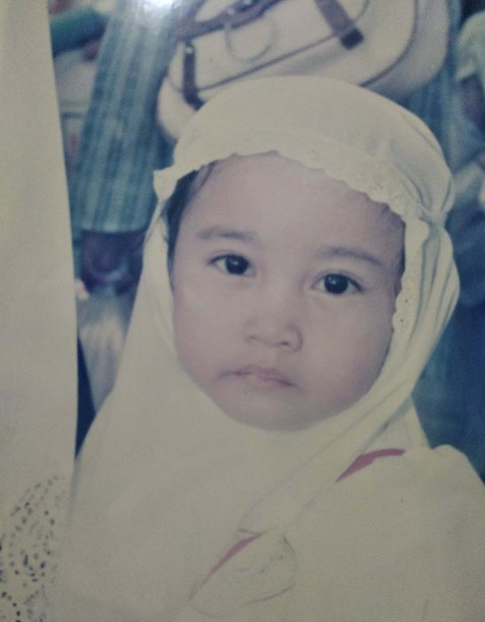
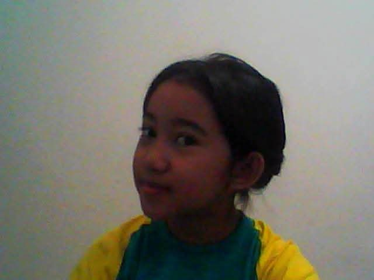
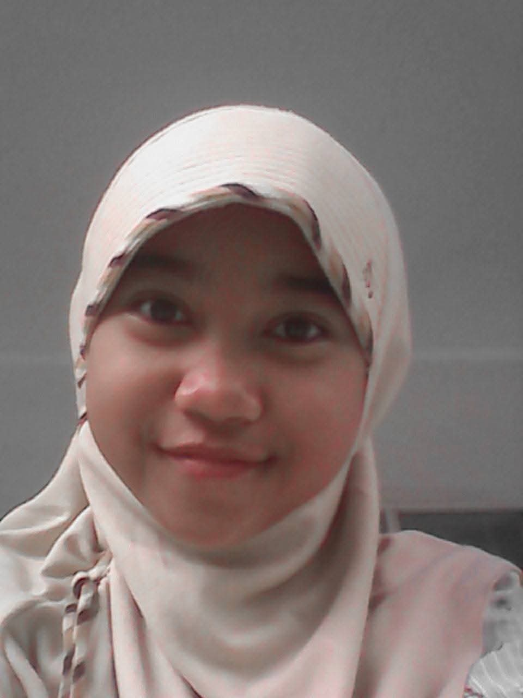
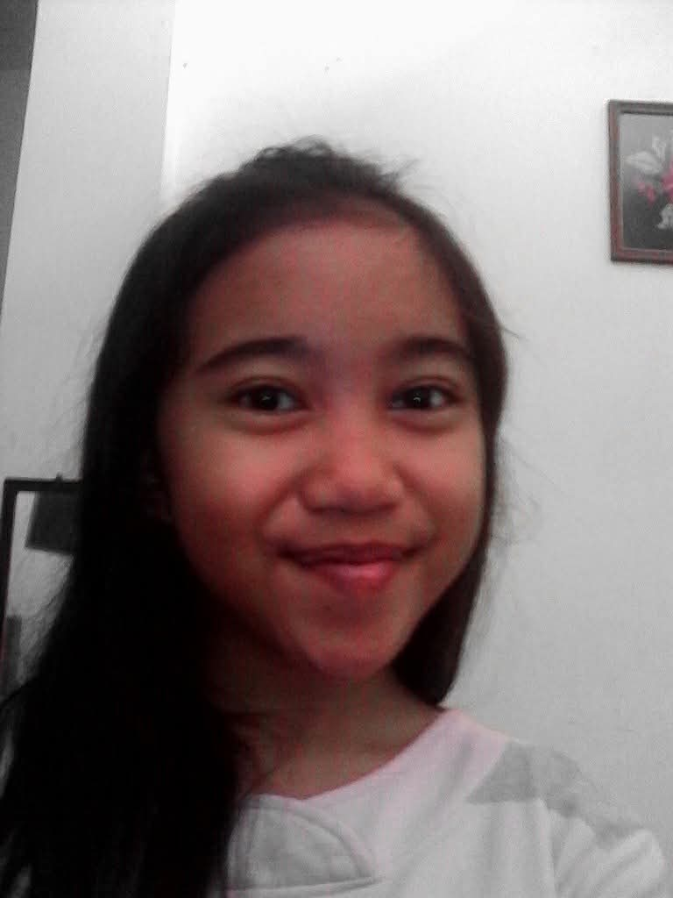
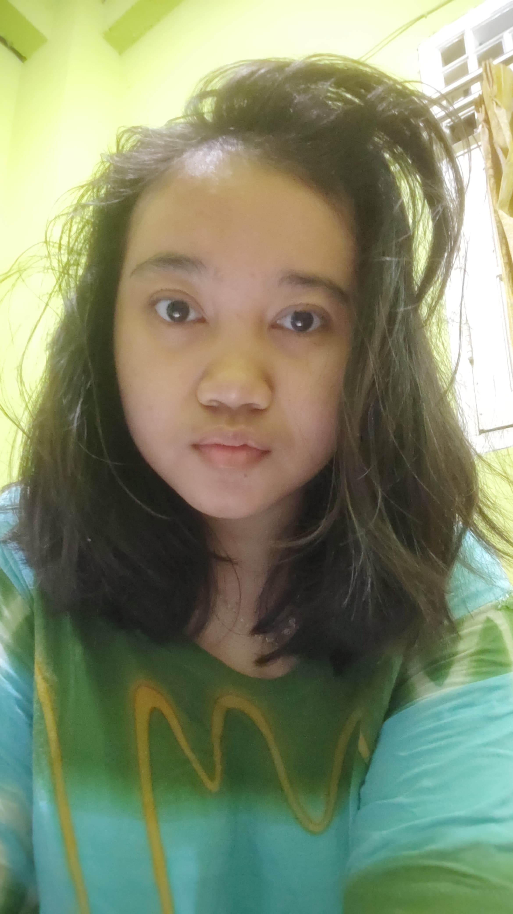
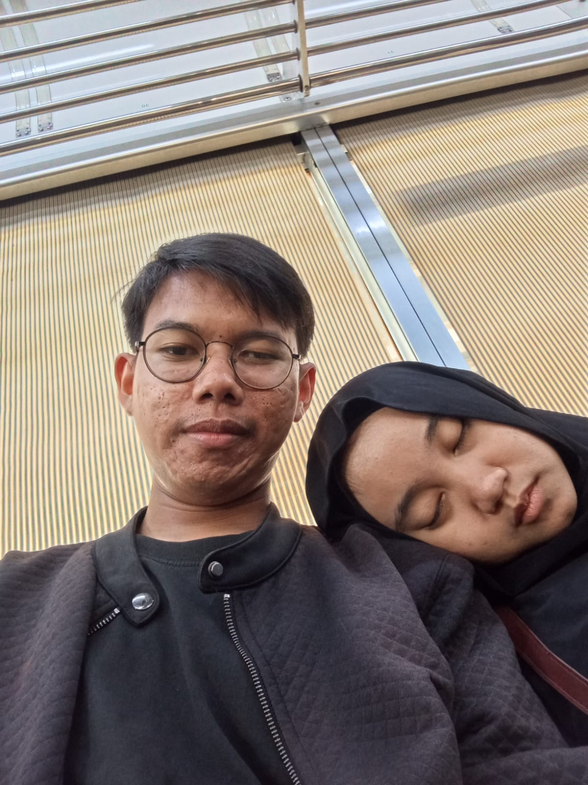
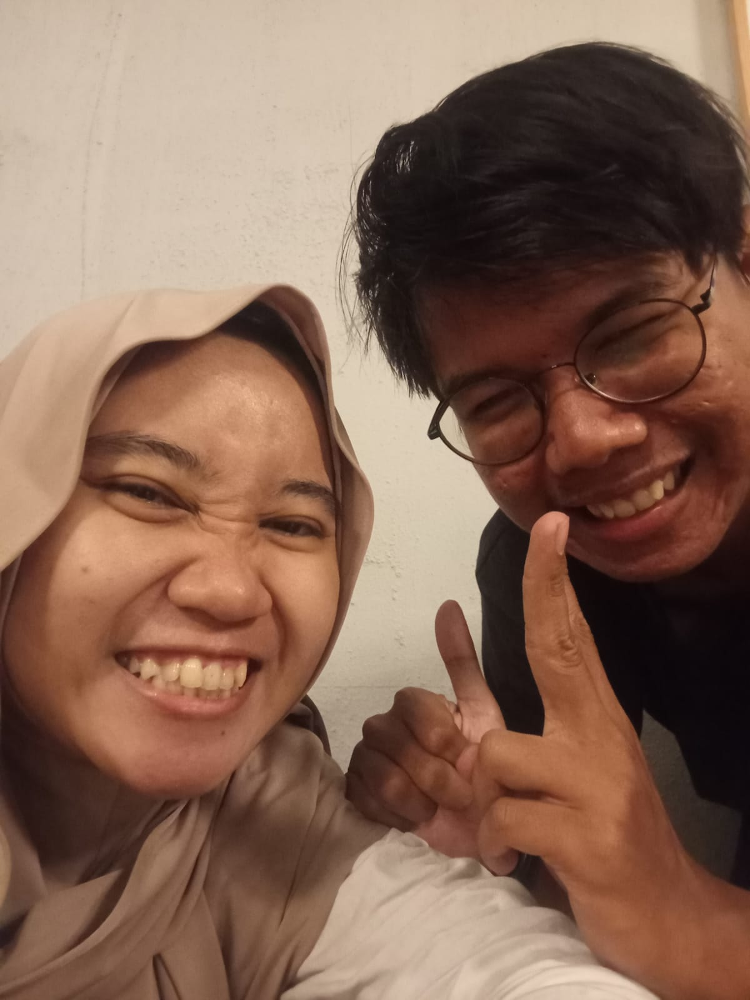
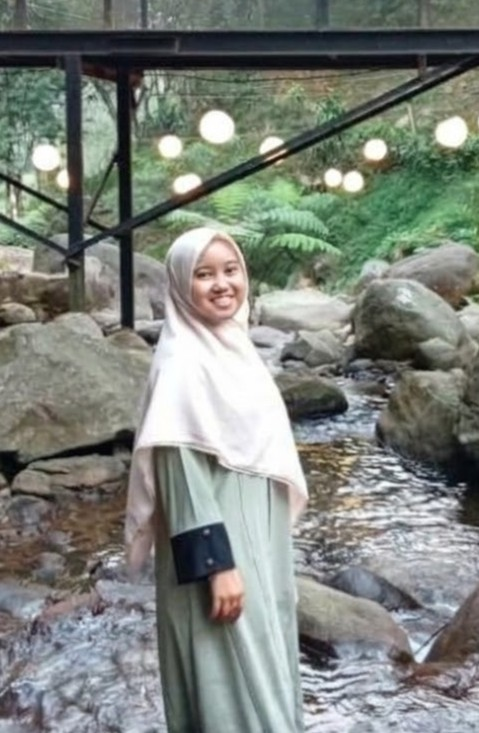
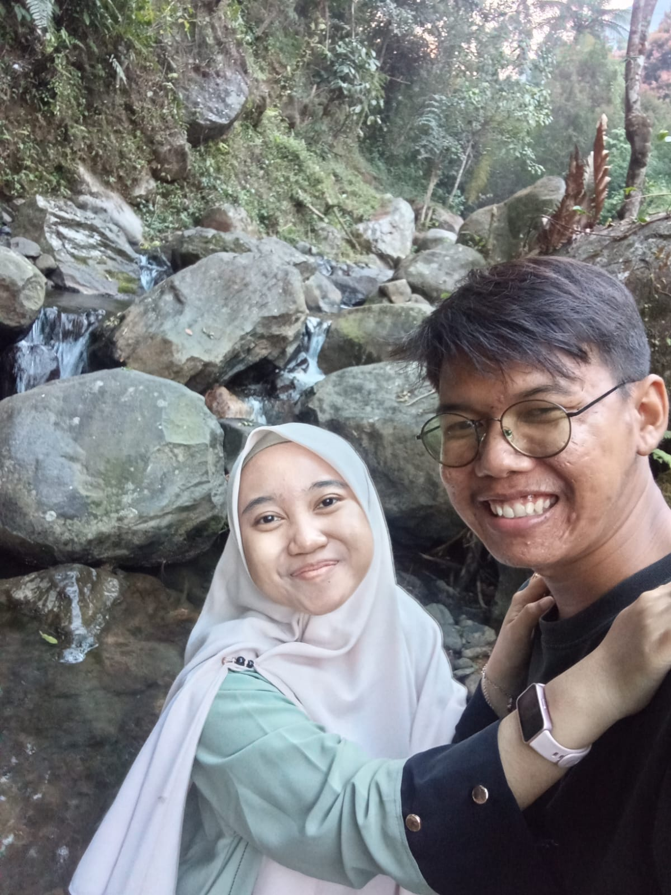

Hati yang tenang
Semoga kamu selalu punya alasan untuk tersenyum, dan ruang untuk beristirahat saat lelah.
to the girl who makes my world softer
Nadziratul Lathifah , my special homey person.
my favorite person
Nadziratul Lathifah
the countdown to your day
Menghitung momen menuju hari ulang tahunmu…
a note from my heart
Dari semua ucapan yang bisa kamu terima hari ini, aku kamu punya satu surat kecil yang bisa dibaca kapan pun kamu butuh diingatkan: kamu berharga, kamu dicintai, dan kehadiranmu berarti bangeddd buat akoooo.
little pieces of us
Beberapa bingkai kecil untuk momen-momen kamu dan aku.

memory no. 02
memory no. 04
memory no. 05
memory no. 06
memory no. 07
memory no. 08
memory no. 09
memory no. 10
memory no. 1124 candles, countless wishes
Dua puluh empat tahun yang sudah kamu lewatin, dan begitu banyak hal indah yang masih akan kamu lakukan (bersama aku).
Semoga kamu selalu punya alasan untuk tersenyum, dan ruang untuk beristirahat saat lelah.
Semoga satu per satu hal yang kamu doakan menemukan jalannya untuk menjadi nyata.
Semoga tubuhmu sehat, pikiranmu lega, dan hari-harimu dipenuhi hal-hal baik.
Semoga kamu tak pernah lupa betapa berharganya dirimu, bukan hanya hari ini, tetapi setiap hari.
Satu harapan kecil untukmu
Semoga dunia lebih sering bersikap lembut kepadamu, sayang.
Dari semua hal baik yang terjadi dalam hidupku, mengenalmu adalah salah satu yang paling kusyukuri.
with all my love, for my sayang ♡